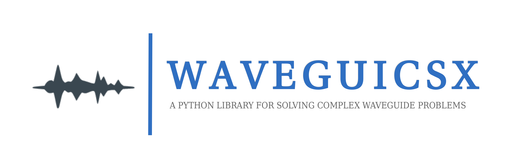
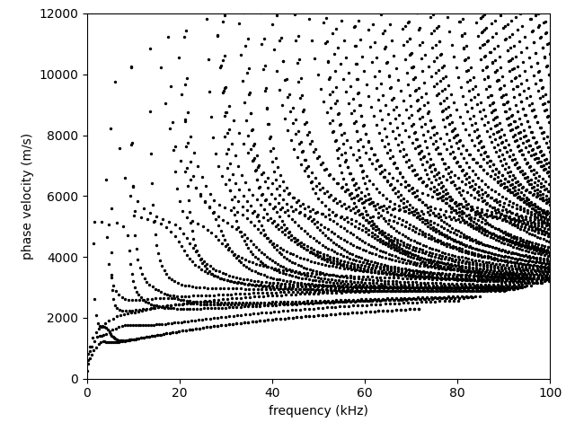
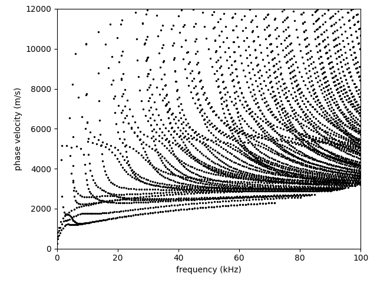
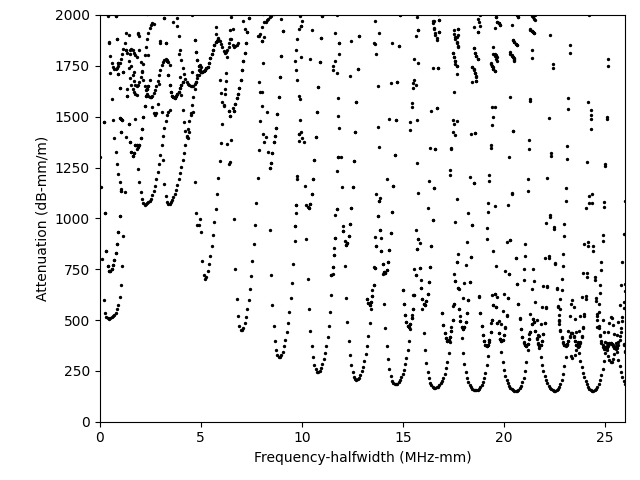
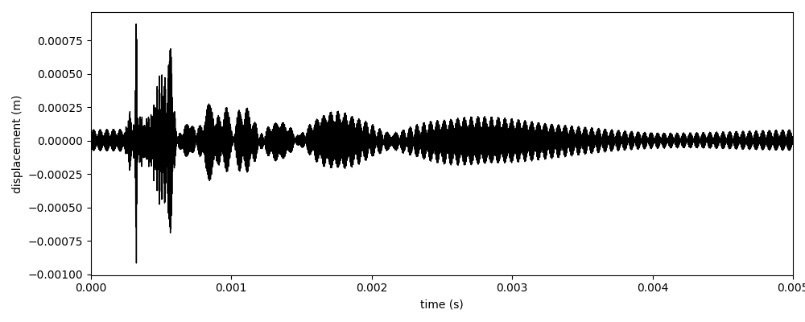
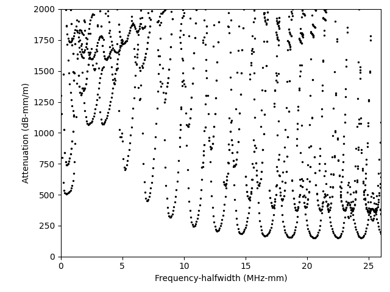
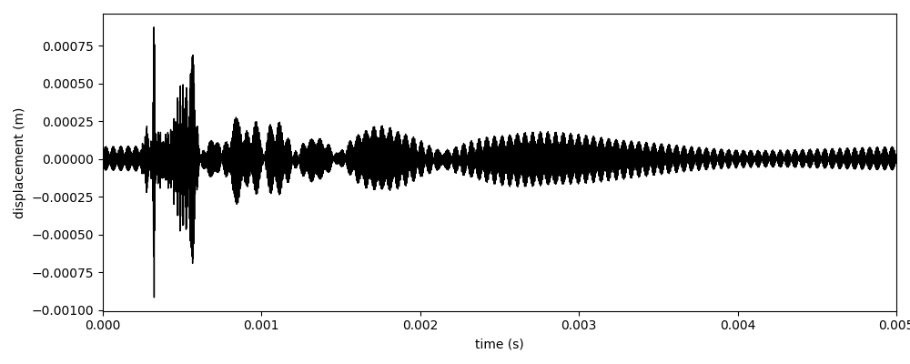

Waveguicsx - Version 2.1
{kind=link}
 

{kind=link}
 



{kind=link}
{kind=link}
Contents:
- Presentation
- Documentation
- waveguicsx.waveguide
WaveguideWaveguide.set_parameters()Waveguide.solve()Waveguide.compute_eigenforces()Waveguide.compute_poynting_normalization()Waveguide.compute_energy_velocity()Waveguide.compute_opposite_going()Waveguide.compute_group_velocity()Waveguide.compute_traveling_direction()Waveguide.compute_pml_ratio()Waveguide.compute_response_coefficient()Waveguide.compute_complex_power()Waveguide.compute_response()Waveguide.track_mode()Waveguide.plot_phase_velocity()Waveguide.plot_attenuation()Waveguide.plot_energy_velocity()Waveguide.plot_group_velocity()Waveguide.plot_coefficient()Waveguide.plot_excitability()Waveguide.plot_complex_power()Waveguide.plot()Waveguide.set_plot_scaler()Waveguide.plot_spectrum()
Signal
- waveguicsx.waveguide
- Tutorials
- 0. Three-dimensional elastic bar of square cross-section
- 1. Three-dimensional elastic bar of square cross-section with parallelization
- 2. Three-dimensional elastic bar of square cross-section buried into a PML external medium
- 3. Three-dimensional elastic bar of square cross-section buried into a PML external medium using gmsh
- 4. Excitation of a three-dimensional elastic bar of circular cross-section
- 5. Excitation of a three-dimensional elastic bar of circular cross-section with parallelization
- 6. Time response of a two-dimensional plate excited near its first ZGV resonance
- 7. Dispersion curves of a rail
- 8. Reflection of Lamb modes by the free edge of a plate
- 9. Reflection and transmission of Pochhammer-Chree modes inside a cylinder